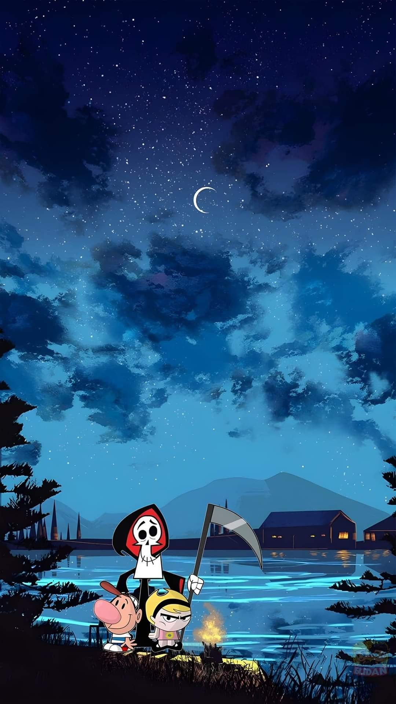
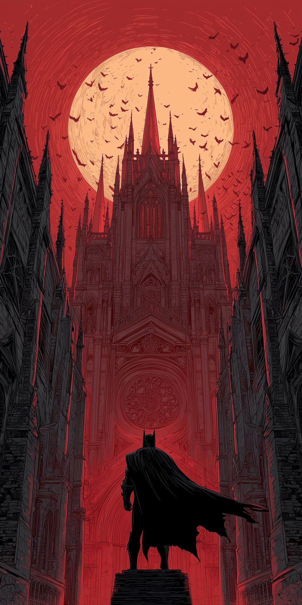
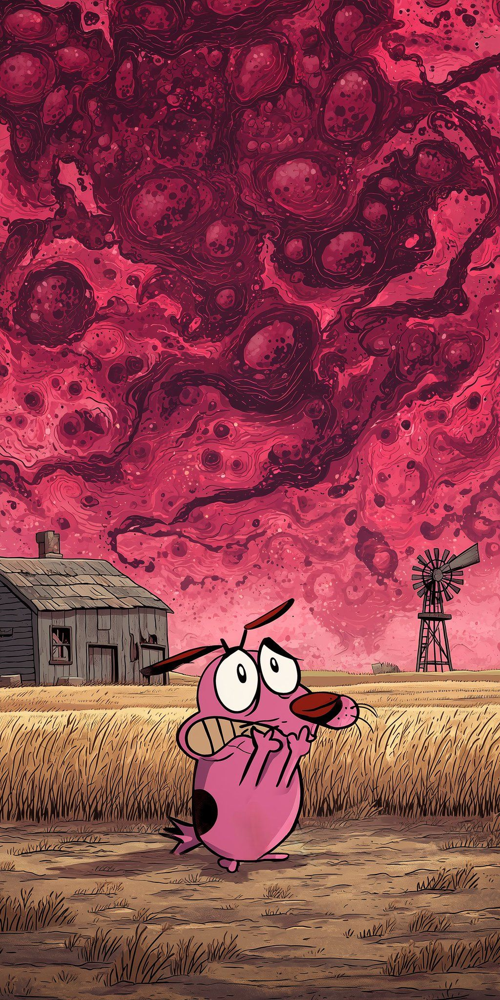
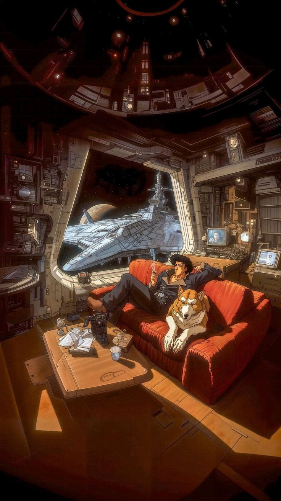
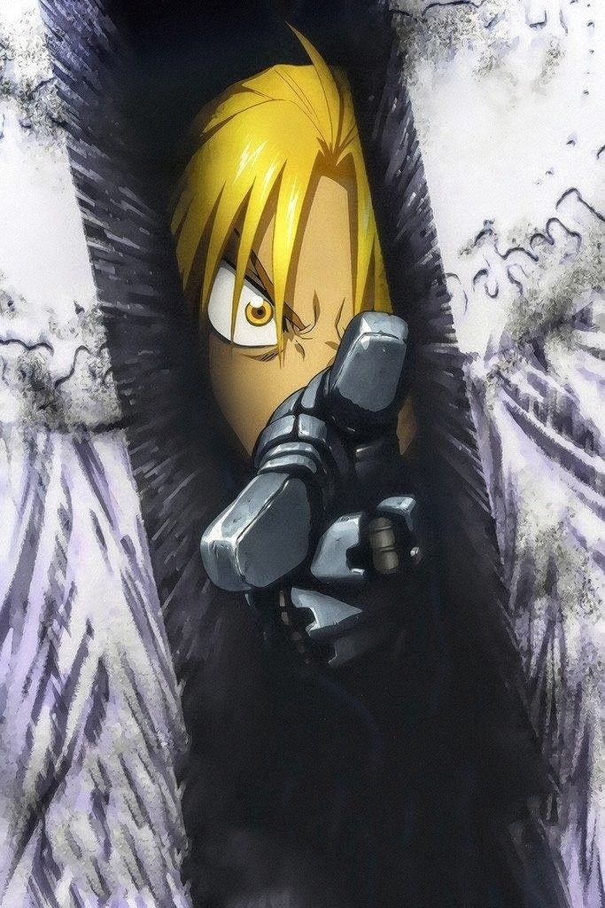
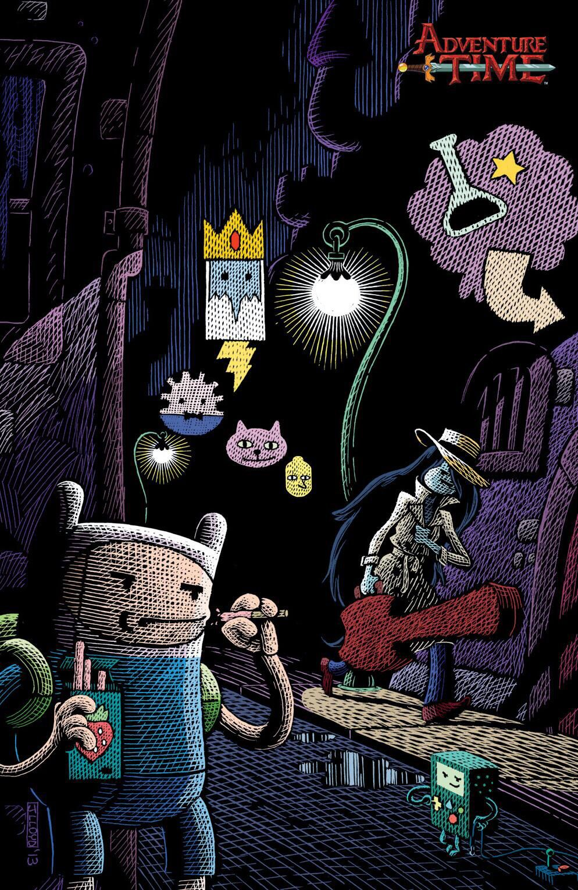
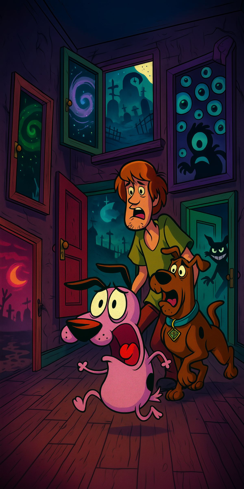
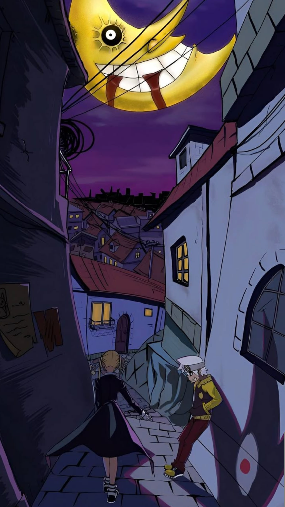
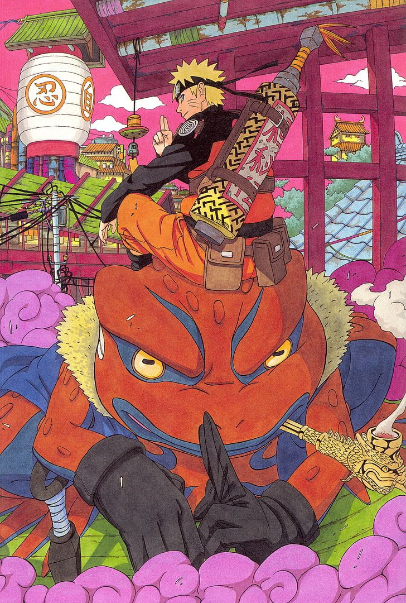

Billy e Mandy
Billy e Mandy, duas crianças normais, vencem o desafio no Reino do Limbo contra o representante da morte, Puro Osso. Como pagamento pela derrota, Puro Osso passa a ser amigo das crianças e, juntos, eles vivem sinistras aventuras Trailer.

Batman Das Trevas
Batman é um personagem fictício e super-herói da editora norte-americana DC Comics, criado pelo escritor Bill Finger a partir dos esboços do desenhista Bob Kane, aparecendo pela primeira vez na revista Detective Comics #27 com o nome "Bat-Man Trailer

Coragem,O Cão Covarde
Coragem é um cachorro que vive em uma fazenda distante onde acontecem aparições de monstros, fantasmas e outras criaturas. O animal está sempre defendendo e salvando seus donos idosos de eventos misteriosos. Trailer

Cowboy Bepop
Cowboy Bebop segue a tripulação de caçadores de recompensas da nave Bebop em suas aventuras pelo sistema solar no ano de 2071. Os episódios exploram o passado sombrio dos personagens, abordando temas como existencialismo e solidão, enquanto eles perseguem criminosos por dinheiro. Trailer

Fullmetal Alchemist
Fullmetal Alchemist é sobre os irmãos Edward e Alphonse Elric, que, após um experimento de alquimia proibida para ressuscitar a mãe dar errado, perdem partes de seus corpos. Edward perde um braço e uma perna, enquanto Alphonse perde todo o seu corpo, com a alma do garoto selada em uma armadura. Trailer

Hora de aventura
Finn vive grandes aventuras na terra de Ooo na companhia de seu melhor amigo, Jake. De viagens a reinos alucinantes a lutas contra vampiros, os dois estão prontos para enfrentar qualquer perigo. Trailer

Scooby Doo
Scooby-Doo é uma franquia americana de mídia criada por Joe Ruby e Ken Spears. Inicialmente, a série foi produzida pela Hanna-Barbera. Após a absorção da Hanna-Barbera pela Warner Bros. em 2001, a franquia passou a ser produzida pela divisão de animação da Warner, a Warner Bros. Animation. Trailer

Soul Eater
Soul Eater gira em torno de alunos da Escola Técnica da Morte, localizada em Nevada, Estados Unidos, que se dividem em pares de "Mestre" e "Arma" para combater o mal. A missão deles é coletar as almas de 99 humanos malignos e uma alma de bruxa para que a arma se torne uma Foice da Morte. Trailer

Naruto Shippuden
Naruto é uma série de mangá escrita e ilustrada por Masashi Kishimoto, que conta a história de Naruto Uzumaki, um jovem ninja que constantemente procura por reconhecimento e sonha em se tornar Hokage, o ninja líder de sua vila. Trailer